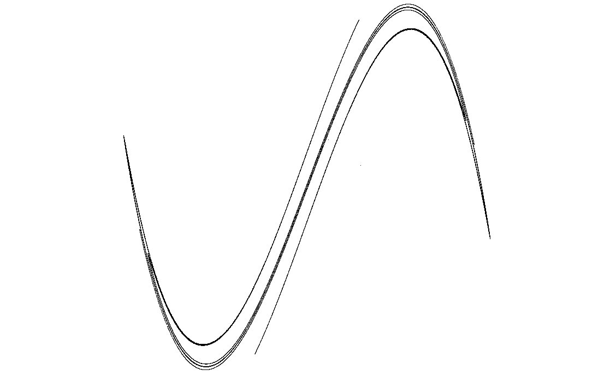

Script gallery
Duffing Map
A nonlinear oscillator reduced to a trail of points.
\(x_{n+1}=y_n,\quad y_{n+1}=-b x_n+a y_n-y_n^3\)
The Duffing map is a discrete echo of nonlinear forced motion. This script follows one orbit for many iterations and lets its accumulated trace reveal an attractor.

What to try first
Increase the iteration count and watch the attractor fill in. This image is built by visits, not by per-pixel escape tests.
Look for folds and thin bands. They show how the map stretches and returns the orbit.
Compare with Henon Map documentation; both are attractor rooms in the museum.
Mathematical notes
The scripted map
The script starts at \((x,y)=(0.5,0.2)\) and iterates \(x_{n+1}=y_n\), \(y_{n+1}=-b x_n+a y_n-y_n^3\), with \(a=2.75\) and \(b=0.2\). Each visited point is plotted.